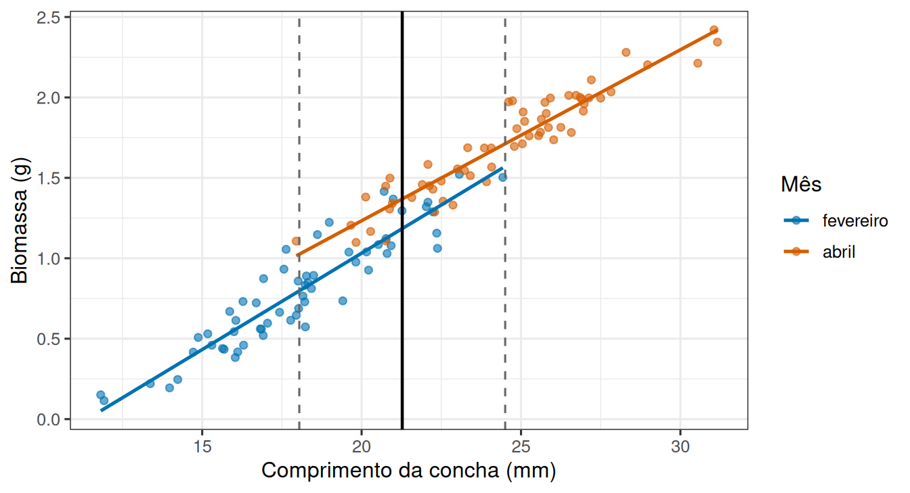
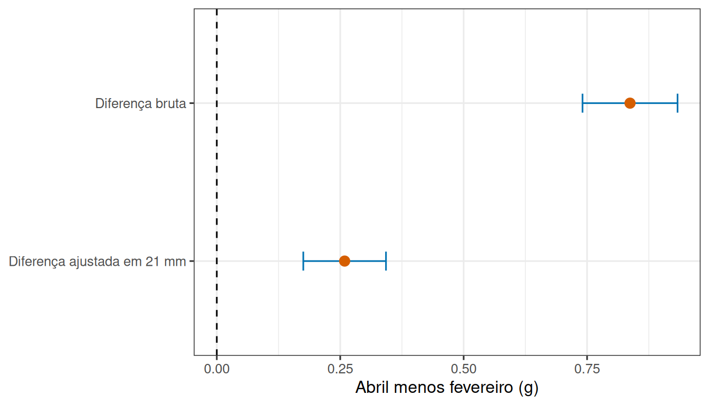
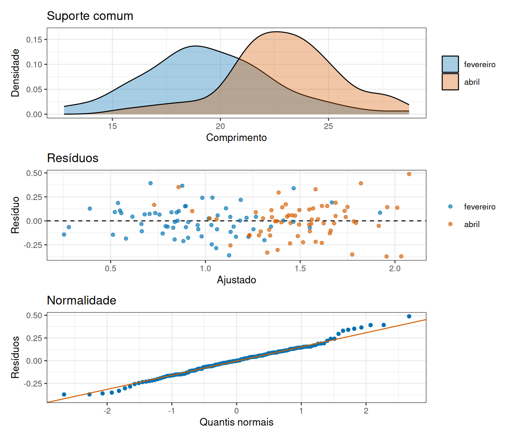

Tratamento e covariável no mesmo modelo
Leitura prévia
1 Os moluscos de fevereiro pesam menos. Ou não?
Uma equipe coleta moluscos em um banco de areia em dois meses diferentes e mede a biomassa de cada indivíduo. A média de fevereiro é claramente menor que a de abril.
Antes de falar em efeito do mês, uma pergunta: os moluscos dos dois meses tinham o mesmo tamanho?
Biomassa cresce com o comprimento da concha. Se os indivíduos de fevereiro eram menores, parte da diferença (talvez toda ela) é uma diferença de tamanho, não de mês.
O comprimento aqui é uma covariável: uma medida contínua, registrada em cada unidade, que afeta a resposta e não é o que queremos comparar.
2 Comparar em condições equivalentes
A ideia central é simples: em vez de comparar as médias brutas, comparar os meses em um mesmo comprimento de concha.
A figura mostra o problema e a solução ao mesmo tempo. Os dois grupos ocupam faixas diferentes de comprimento, e por isso a comparação das médias brutas mistura mês e tamanho. Mas as duas retas podem ser lidas em um comprimento comum, e a distância vertical entre elas nesse ponto é o efeito ajustado do mês.
2.1 Modelos aditivo e com interação
Escrever o modelo com precisão exige duas decisões: onde fica a origem da covariável e se as duas retas compartilham a mesma inclinação. Defina \(G=0\) para fevereiro, \(G=1\) para abril e \(X\) como comprimento centralizado em um valor comum. O modelo aditivo de ANCOVA é
\[ Y=\beta_0+\beta_1X+\beta_2G+\varepsilon. \]
\(\beta_1\) é a inclinação compartilhada e \(\beta_2\) é a diferença ajustada entre meses no valor em que \(X=0\). A centralização é o que dá sentido a \(\beta_2\): sem ela, o coeficiente compararia os meses em uma concha de comprimento zero.
A premissa de inclinações comuns não é automática e pode ser examinada acrescentando um termo:
\[ Y=\beta_0+\beta_1X+\beta_2G+\beta_3XG+\varepsilon. \]
Aqui \(\beta_3\) mede a diferença de inclinações. Comparar os dois modelos avalia se a interação reduz o resíduo o suficiente para justificar uma relação distinta em cada mês. A decisão não deve depender apenas de um limiar: gráfico, intervalo de \(\beta_3\), precisão e consequência biológica também importam.
No R, os dois modelos diferem por um único operador, e as médias ajustadas saem de uma previsão no ponto centralizado.
Ver o ajuste e as médias ajustadas no R
limites <- moluscos |>
summarise(minimo = min(comprimento), maximo = max(comprimento), .by = mes)
valor_comum <- mean(c(max(limites$minimo), min(limites$maximo)))
moluscos_modelo <- moluscos |>
mutate(comprimento_c = comprimento - valor_comum)
modelo_aditivo <- lm(biomassa ~ comprimento_c + mes, data = moluscos_modelo)
modelo_com_interacao <- lm(biomassa ~ comprimento_c * mes, data = moluscos_modelo)
anova(modelo_aditivo, modelo_com_interacao)Analysis of Variance Table
Model 1: biomassa ~ comprimento_c + mes
Model 2: biomassa ~ comprimento_c * mes
Res.Df RSS Df Sum of Sq F Pr(>F)
1 117 1.7641
2 116 1.7217 1 0.042473 2.8617 0.0934 .
---
Signif. codes: 0 '***' 0.001 '**' 0.01 '*' 0.05 '.' 0.1 ' ' 1Ver o ajuste e as médias ajustadas no R
medias_ajustadas <- tibble(
comprimento_c = 0,
mes = factor(c("fevereiro", "abril"), levels = levels(moluscos_modelo$mes))
)
bind_cols(
medias_ajustadas["mes"],
as_tibble(predict(modelo_aditivo, medias_ajustadas, interval = "confidence"))
)# A tibble: 2 × 4
mes fit lwr upr
<fct> <dbl> <dbl> <dbl>
1 fevereiro 1.15 1.11 1.19
2 abril 1.34 1.30 1.38A comparação entre os dois modelos avalia a interação, e os dados desta simulação foram gerados com inclinações iguais, de modo que ela normalmente não se justifica. As previsões no comprimento centralizado zero, isto é, em 21,2 mm, são as médias ajustadas. Elas representam médias modeladas em uma condição comum, não médias de uma população artificial em que todos os indivíduos tenham exatamente aquele comprimento. A diferença entre as duas previsões é o contraste ajustado, e aqui vale 0,187 g.
Formalmente, no modelo aditivo as médias ajustadas em \(x_0\) são
\[ \widehat\mu_{fev}(x_0)=\hat\beta_0+\hat\beta_1x_0, \qquad \widehat\mu_{abr}(x_0)=\hat\beta_0+\hat\beta_1x_0+\hat\beta_2. \]
Sua diferença é \(\hat\beta_2\) para qualquer \(x_0\), o que reafirma que o efeito ajustado é um número único apenas sob paralelismo. No modelo com interação, a diferença se torna \(\hat\beta_2+\hat\beta_3x_0\). Em ambos os casos, o erro padrão de um contraste \(L\hat\beta\) é
\[ EP(L\hat\beta)=\sqrt{L\widehat{\operatorname{Var}}(\hat\beta)L'}, \]
o que preserva as covariâncias entre os coeficientes. Subtrair limites de dois intervalos de confiança separados não produz o intervalo correto para a diferença.
2.2 Diferença bruta e diferença ajustada
Vale comparar diretamente os dois resultados possíveis. A diferença bruta responde quanto as médias observadas dos dois conjuntos diferem. A diferença ajustada responde quanto os grupos diferem no mesmo valor da covariável, sob o modelo. Elas coincidem aproximadamente quando a distribuição de \(X\) é semelhante entre grupos ou quando \(X\) quase não se relaciona com \(Y\).

A diferença bruta estimada foi 0,84 g e a ajustada, 0,26 g. A distância entre os dois resultados não é uma correção cosmética: a comparação bruta mistura a composição de tamanhos observada com o mês, enquanto a ajustada condiciona a comparação ao comprimento de 21 mm. Uma mudança grande após o ajuste não significa que uma resposta esteja certa e a outra errada, porque elas respondem a perguntas diferentes. Se a pergunta científica fosse deliberadamente sobre as populações tal como encontradas em cada mês, a diferença bruta continuaria relevante. O relatório deve mostrar a distribuição da covariável, as médias brutas, as retas, o ponto de comparação e o contraste ajustado com intervalo de confiança.
3 Pressupostos que sustentam o ajuste
O efeito ajustado é uma quantidade modelada, e por isso depende das suposições do modelo. Além da independência das unidades, a ANCOVA requer relação aproximadamente linear dentro de cada grupo, variância residual comparável, resíduos adequados e suporte comum da covariável. O modelo aditivo exige ainda homogeneidade de inclinações. Esses pressupostos devem ser avaliados nos resíduos e na distribuição conjunta de \(X\), grupo e resposta, que é o que os três painéis abaixo reúnem.

O primeiro painel é o mais específico da ANCOVA: as duas densidades precisam se sobrepor, porque é na região comum que a comparação ajustada tem apoio empírico. Os outros dois repetem os diagnósticos já usados na regressão e na análise de variância. Além desses gráficos, compare o modelo aditivo ao modelo com interação e inspecione observações influentes. Uma interação imprecisa não comprova homogeneidade; o intervalo para \(\beta_3\) informa quais diferenças de inclinação ainda são compatíveis com os dados.
3.1 Quando o ajuste tenta criar uma comparação inexistente
O pressuposto de suporte comum merece um exame à parte, porque sua violação não impede o cálculo. Se fevereiro contém apenas conchas de 12 a 17 mm e abril apenas de 25 a 30 mm, não há comprimento comum. Um modelo aditivo ainda imprime \(\hat\beta_2\), mas ele é obtido estendendo as duas retas por uma região vazia. Nesse caso, mês e comprimento estão quase confundidos, e a estimativa depende inteiramente da forma linear assumida.
Há ainda uma advertência sobre a escolha da covariável. Testar muitas opções e ficar com a que produz o resultado mais conveniente altera a estimativa e o valor de p de modo oportunista. A escolha deve vir da biologia, da temporalidade e do plano de análise. Covariáveis medidas antes do tratamento podem aumentar a precisão; variáveis causadas pelo tratamento podem ser mediadoras, e ajustar por elas muda a pergunta para um efeito direto condicionado.
4 A mesma família de modelos
Vale notar o que aconteceu ao longo do semestre. Comparar dois grupos, comparar quatro grupos, ajustar uma reta e agora combinar grupo e reta. Tudo isso são variações de uma mesma estrutura:
\[\text{resposta} = \text{parte sistemática} + \text{variação residual}\]
O que muda é quem entra na parte sistemática. Só categorias, e temos ANOVA. Só uma variável contínua, e temos regressão. Os dois juntos, e temos ANCOVA. As ferramentas de diagnóstico (resíduos, pressupostos, partição da variação) são as mesmas nos três casos, e é por isso que os gráficos da seção anterior seriam reconhecíveis em qualquer um deles.
5 Ajustar não é aleatorizar
Resta um ponto que decide o alcance das conclusões, e ele não é estatístico.
Se o mês tivesse sido sorteado para cada molusco (o que é impossível, mas serve de referência), qualquer outra diferença entre os grupos estaria distribuída ao acaso, e o efeito ajustado poderia ser lido como efeito causal.
Como os meses são condições observadas, os grupos podem diferir em muitas outras coisas: temperatura da água, disponibilidade de alimento, fase reprodutiva, profundidade de coleta. Ajustar pelo comprimento remove apenas a diferença devida ao comprimento.
A pergunta que abriu esta leitura, se os moluscos de fevereiro realmente pesam menos, recebeu uma resposta condicional, e essa forma de resposta é o resumo do semestre inteiro. Eles pesam menos em média, e pesam menos também quando comparados a um mesmo comprimento, mas a segunda afirmação vale somente na faixa em que os dois meses foram observados, somente se as retas forem paralelas e somente como associação, porque ninguém sorteou o mês de nascimento de um molusco. Cada uma dessas ressalvas veio de uma decisão tomada antes da análise: o que foi medido, quantas unidades entraram, como foram selecionadas e o que ficou de fora. É essa cadeia, do delineamento à conclusão, que a unidade curricular procurou tornar visível.
6 Para saber mais
- Regressão linear bayesiana (MEAD)
- Ordenação e análise multivariada (MEAD)